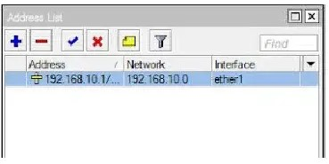

Laporan II Pratikum Sistem Paralel dan Terdistribusi
KONFIGURASI IP ADDRESS MENGGUNAKAN MIKROTIK
Disusun untuk memenuhi tugas mata kuliah
Sistem Paralel dan Terdistribusi
Oleh:
CHUSNUL ZAMZAMI
(2208001010026)

PROGRAM STUDI DIII MANAJEMEN INFORMATIKA
JURUSAN INFORMATIKA
FAKULTAS MATEMATIKA DAN ILMU PENGETAHUAN ALAM
UNIVERSITAS SYIAH KUALA
BANDA ACEH, SEPTEMBER 2024
PEMBAHASAN
1. IP Address
IP Address (Internet Protocol Address) adalah sebuah alamat unik yang digunakan untuk mengidentifikasi perangkat dalam jaringan komputer atau internet. Setiap perangkat yang terhubung ke internet, seperti komputer, ponsel, atau server, memiliki IP Address agar dapat saling berkomunikasi dan bertukar data.
2. Jenis-Jenis IP Address
- IPv4 (Internet Protocol version 4): Menggunakan format angka desimal yang dipisahkan oleh titik, misalnya 192.168.0.1. IPv4 terdiri dari empat kelompok angka (masing-masing 8 bit), dengan total 32 bit, sehingga menghasilkan sekitar 4,3 miliar alamat unik.
- IPv6 (Internet Protocol version 6): Menggunakan format yang lebih panjang, yang terdiri dari angka dan huruf heksadesimal yang dipisahkan oleh tanda titik dua, misalnya 2001:0db8:85a3:0000:0000:8a2e:0370:7334. IPv6 menggunakan 128 bit, sehingga mampu menyediakan jumlah alamat yang jauh lebih banyak dibandingkan IPv4.
3. IP Address dibagi menjadi dua kategori:
- Public IP Address: Alamat yang digunakan untuk mengidentifikasi perangkat yang dapat diakses melalui internet.
- Private IP Address: Alamat yang digunakan untuk mengidentifikasi perangkat di dalam jaringan lokal (misalnya, dalam rumah atau kantor).
4. Class IP Address
- Class A:
- Rentang IP Address: 1.0.0.0 hingga 126.0.0.0
- Subnet Mask Default: 255.0.0.0
- Jumlah Host: 16.777.214 alamat IP per jaringan
- Karakteristik: Class A digunakan untuk jaringan besar dengan banyak perangkat. Octet pertama berkisar dari 1 hingga 126.
- Contoh IP Address: 10.0.0.1 dengan subnet mask 255.0.0.0.
- Class B:
- Rentang IP Address: 128.0.0.0 hingga 191.255.0.0
- Subnet Mask Default: 255.255.0.0
- Jumlah Host: 65.534 alamat IP per jaringan
- Karakteristik: Class B digunakan untuk jaringan menengah hingga besar. Octet pertama berkisar dari 128 hingga 191.
- Contoh IP Address: 172.16.0.1 dengan subnet mask 255.255.0.0.
- Class C:
- Rentang IP Address: 192.0.0.0 hingga 223.255.255.0
- Subnet Mask Default: 255.255.255.0
- Jumlah Host: 254 alamat IP per jaringan
- Karakteristik: Class C digunakan untuk jaringan kecil dengan perangkat terbatas. Octet pertama berkisar dari 192 hingga 223.
- Contoh IP Address: 192.168.1.1 dengan subnet mask 255.255.255.0.
5. Konfigurasi IP Address melalui Winbox
- Hal yang pertama dilakukan yaitu menghidupkan mikrotiknya dengan menancapkan kabel power ke sumber listrik.
- Pasang kabel LAN (RJ45) pada Ether1 dan ujung kabel LAN satunya lagi ke sumber internet (ISP).
- Kemudian pasang kabel LAN lagi untuk menghubungkan ke perangkat PC/Laptop Client dengan menancapkan kabel LAN ke Ether2 dan sambung ke PC/Laptop Client. Contoh topologi perangkatnya kurang lebih seperti ini:
- Lalu masuk ke aplikasi Winbox dan setting IP Address dengan cara masuk ke menu
IP > Address. - Isi kolom Address sesuai IP yang diinginkan dan arahkan pada interface yang ingin dikonfigurasi.
- Setelah mengisi IP Address dan memilih interface klik Apply > OK.


